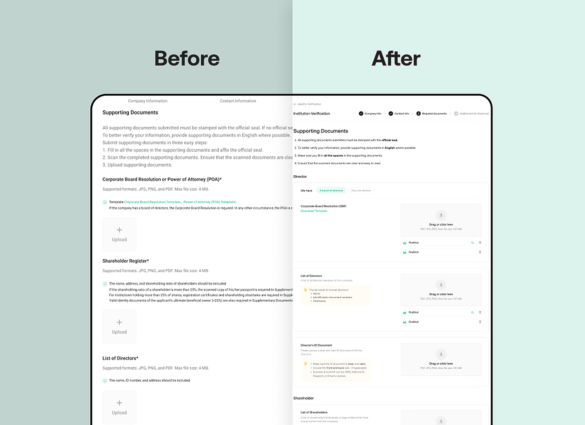
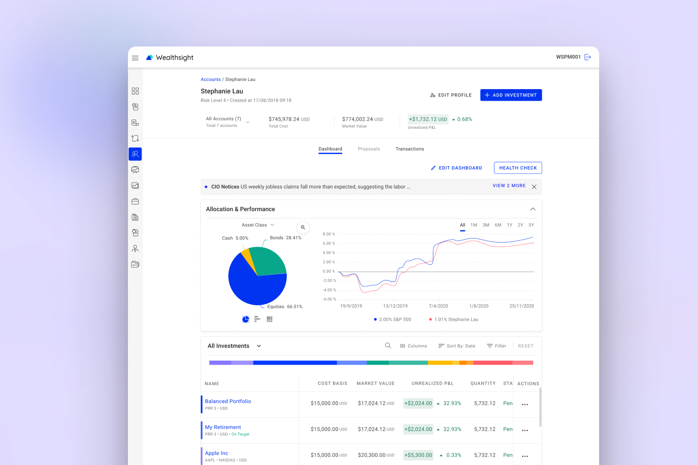
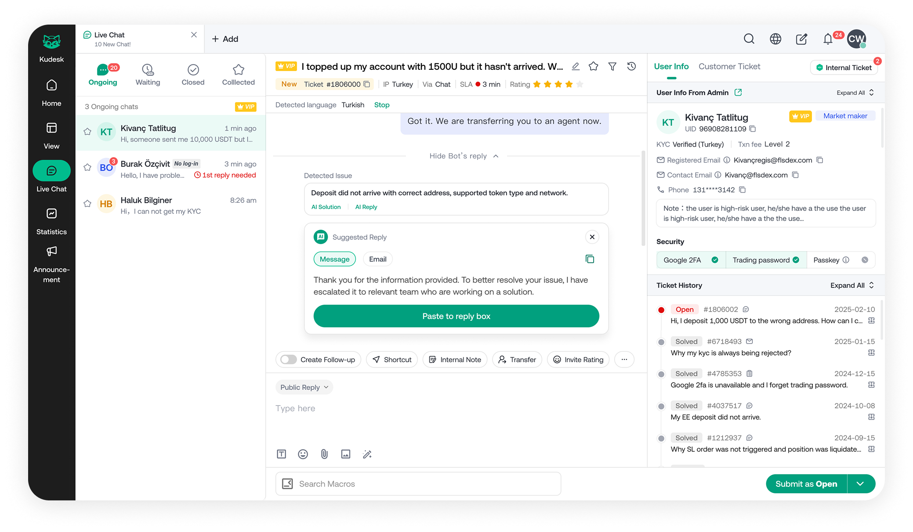
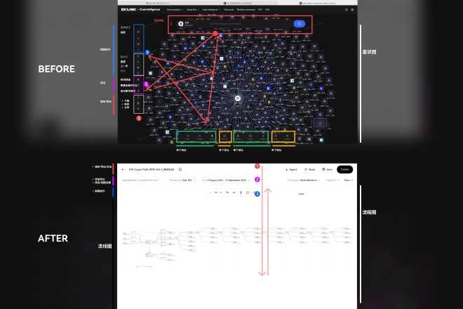
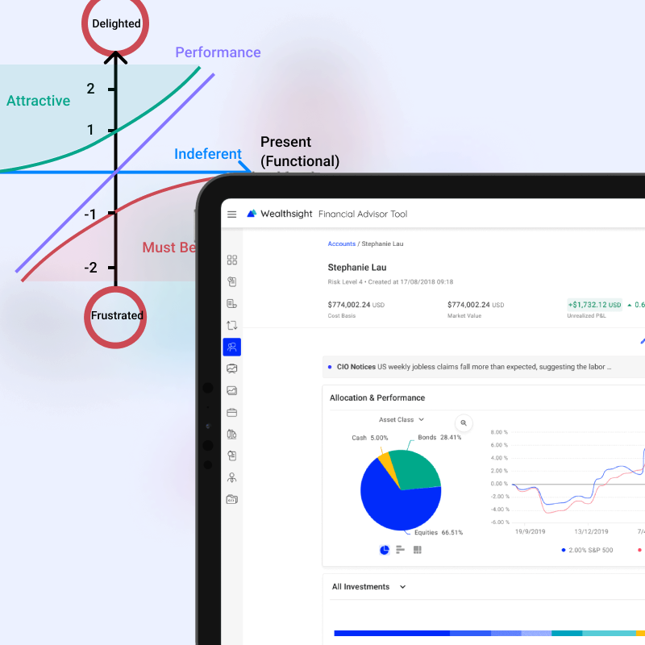
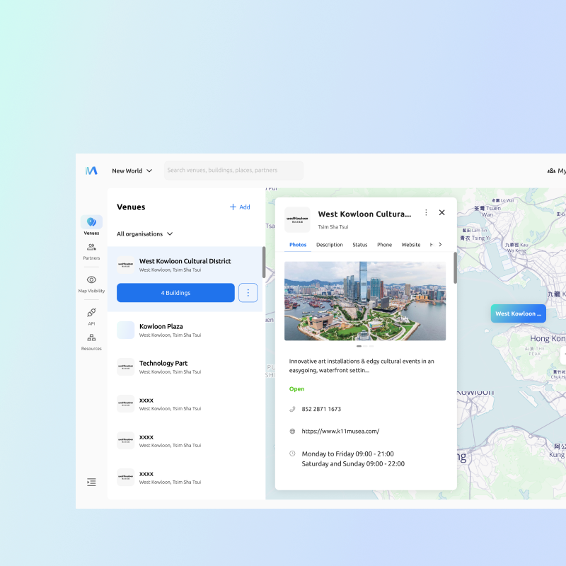

Senior designer & design lead for fintech, crypto, and institutional tools.
I help financial and crypto teams ship clear, compliant, and confident experiences — from institutional onboarding to on-chain investigation tools. Previously at OKX and Microsoft.
Selected case studies
Six projects that show how I work across compliance, data-heavy interfaces, and 0 → 1 systems.

Replaced a text-heavy KYB flow with guided selection and a document checklist — designed in two weeks against research showing 82% of users submitted multiple applications.

Designed one dashboard pattern serving portfolio managers, financial advisors, and white-labeled customer apps — running workshops to reconcile professional and retail mental models.

Owned discovery, IA and component design across KuCoin's compliance, customer service, and operations tooling — partnered with engineering to ship under tight regulatory deadlines.

Revamped the cryptocurrency transaction investigation flow — interviewing analysts to map their decision points, then redesigning the graph view, evidence panel, and case notes around them.

Devised a roadmap framework that grounded prioritisation decisions in user research — interview synthesis, journey mapping, and a scoring rubric that PMs and designers could share.

Took an indoor-mapping content management system from blank page to shippable MVP — defining the editor canvas, layer model, and review workflow with two engineers.